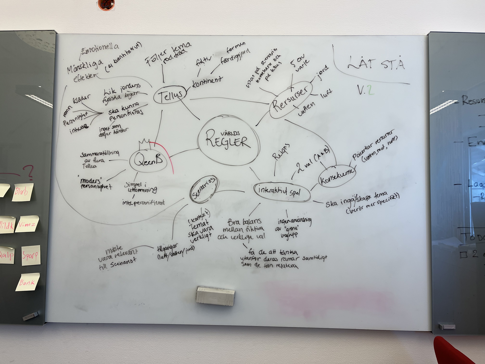
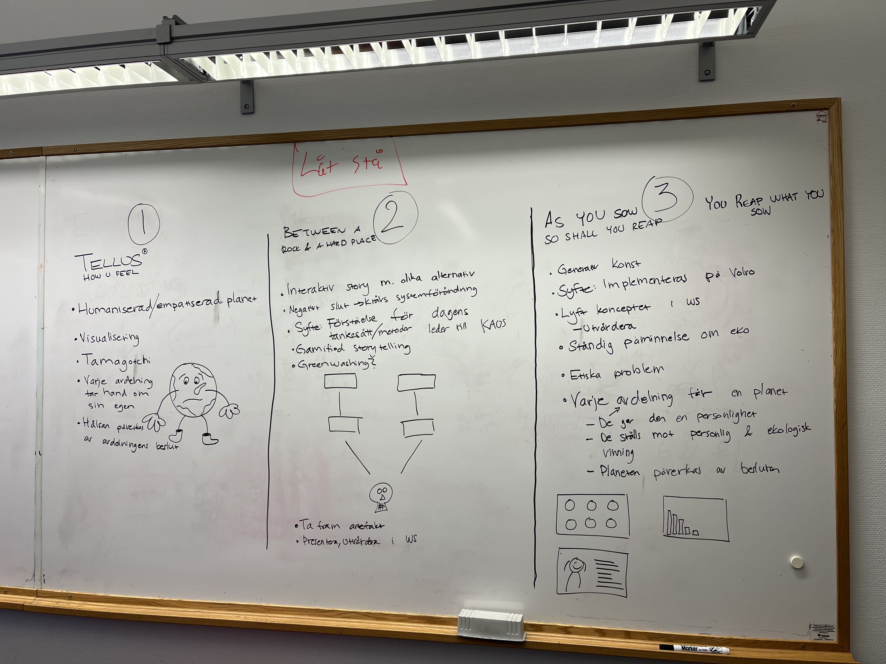
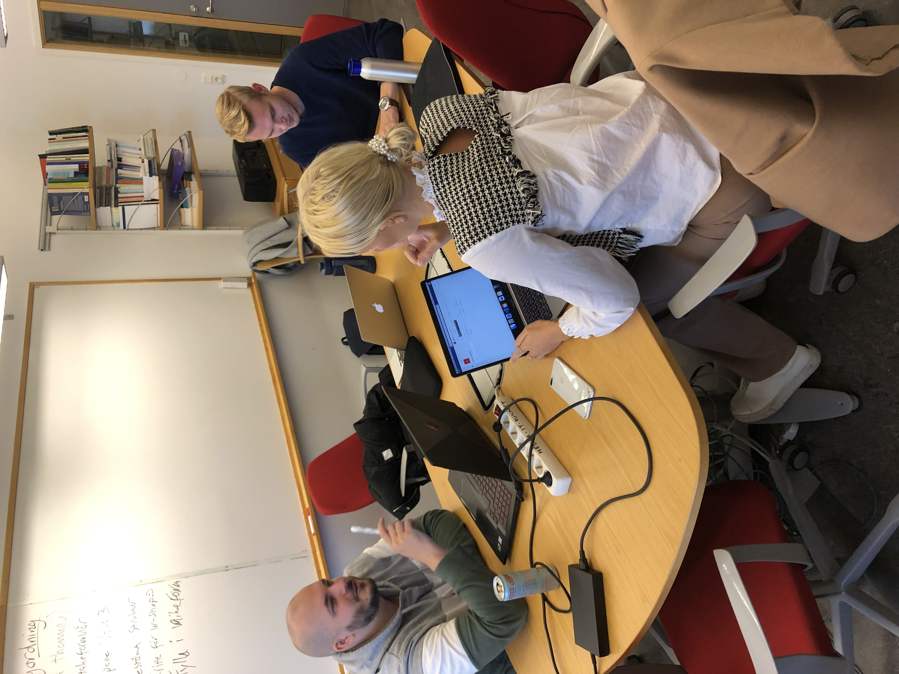
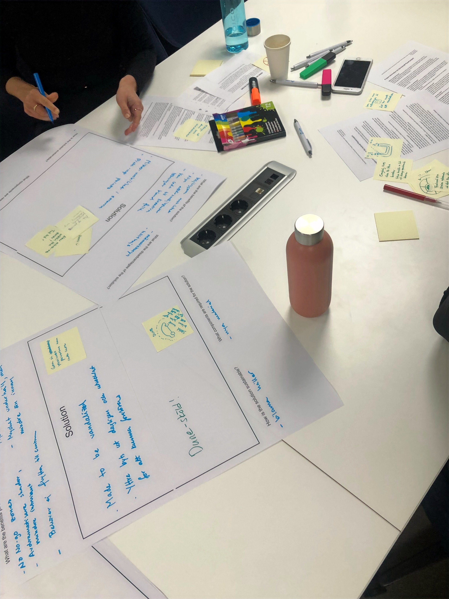
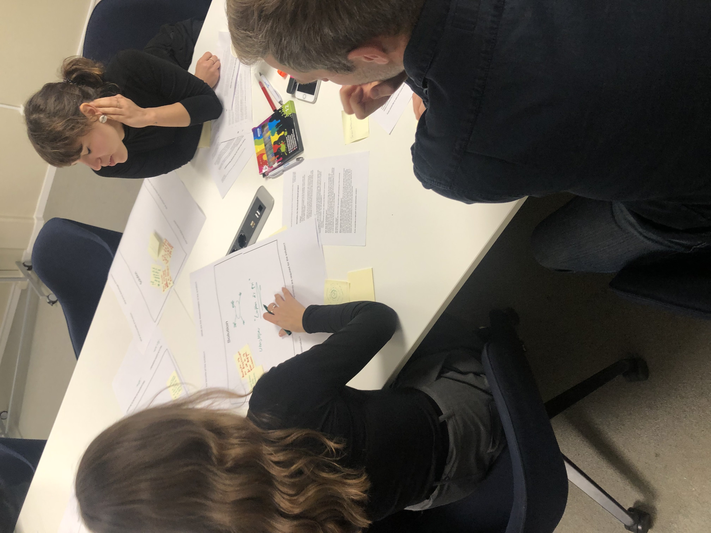
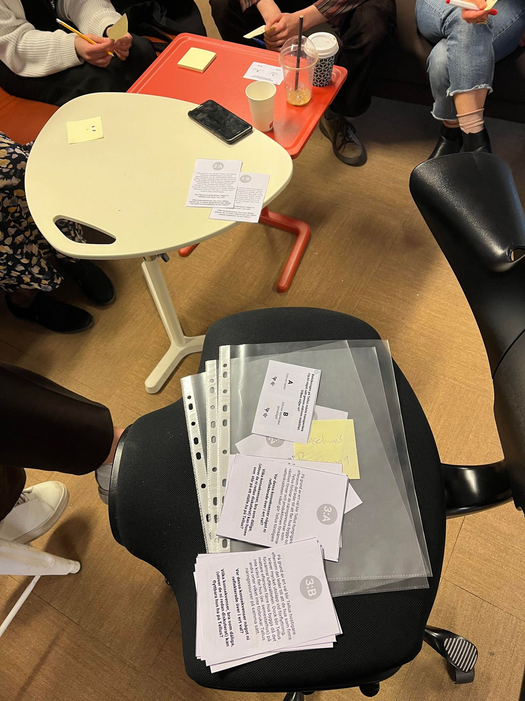
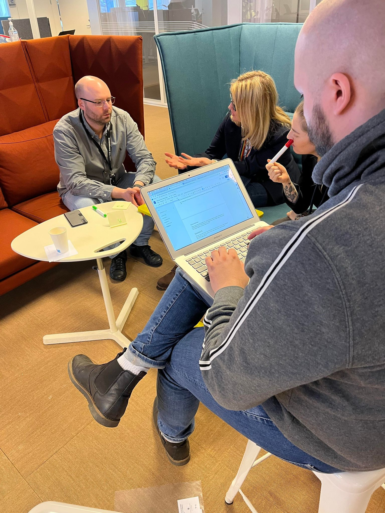
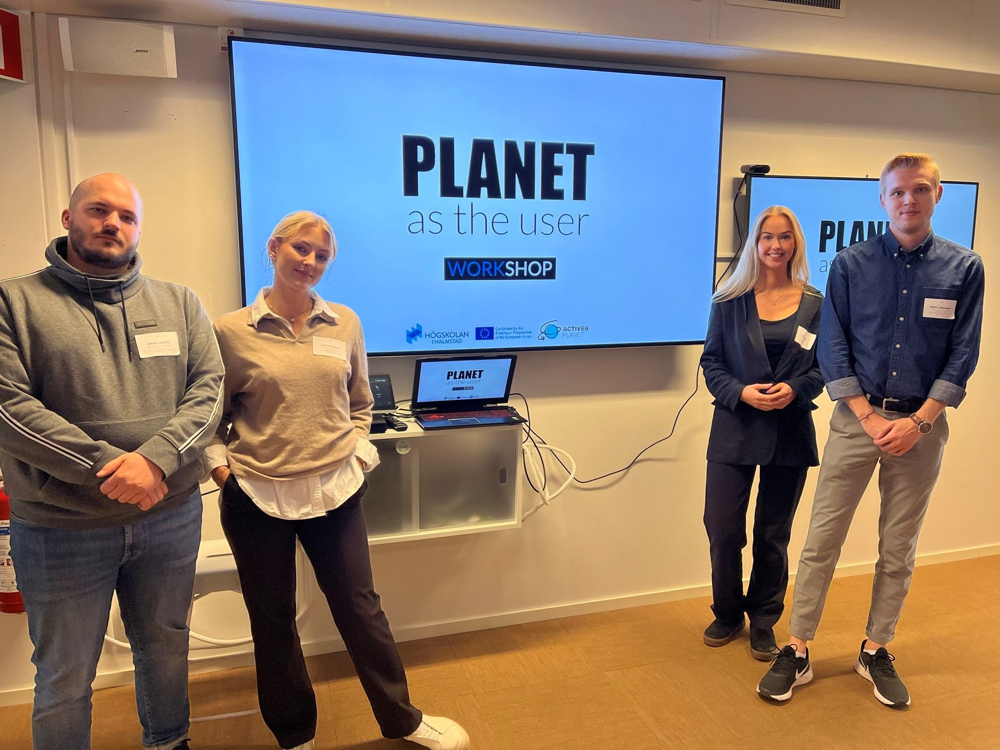
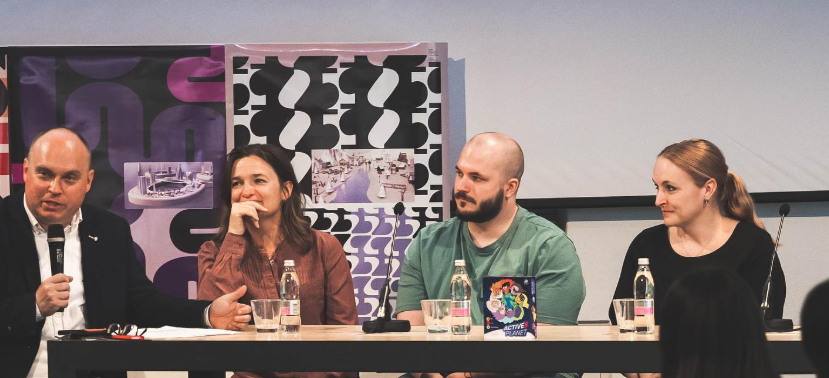
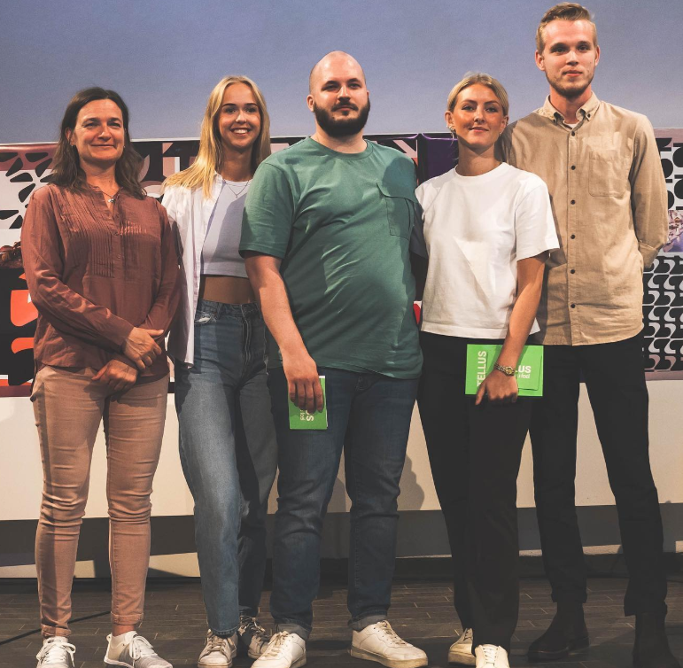

Volvo Cars, EU, Halmstad University · 2021–2022 · UX Designer & Workshop Facilitator
Active8 Planet
A speculative card game that puts the planet back into the room when agile teams make mobility decisions.

The challenge
Sustainability targets rarely translate into what agile teams actually feel day-to-day. The brief was to make the planet's stake in mobility decisions tangible enough for teams to act on — across industry, academia, and agile practice.







Process
Working from the Double Diamond and speculative/critical design methods, I researched sustainability challenges through interviews and literature, then translated the findings into design artefacts built to provoke reflection rather than just inform.





Outcome
The result was a card-based training game for agile teams, visualising the downstream planetary cost of everyday decisions. I led the design and facilitation of pilot workshops to test and iterate the concept, then digitised parts of it for a more dynamic, repeatable experience.
Reflection
Watching participants question core assumptions about mobility — after being asked to imagine a world without cars — showed me how far a well-built design tool can push a group past its defaults. It sharpened how I use creative methods to make abstract, value-laden topics discussable.